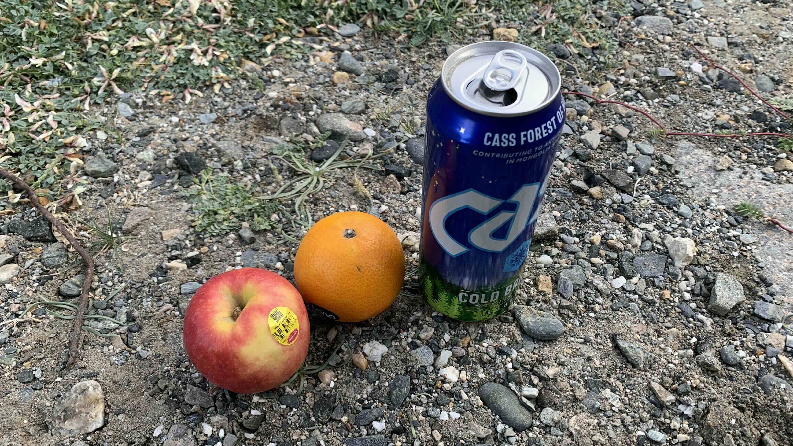

k-Day 115｜
清晨時被冷醒，睡袋摸起來扁扁的，趁著吃零食的時候拿出來曬太陽。鞋子襪子也該曬一下，好久沒洗了，呈現酸臭味的襪子鋪在鞋面，已經沒有可替換的襪子。

今天的目標是騎到河谷商店，至少得補充水源和食物再做打算。
今日花費： 0元
清晨時被冷醒，睡袋摸起來扁扁的，趁著吃零食的時候拿出來曬太陽。鞋子襪子也該曬一下，好久沒洗了，呈現酸臭味的襪子鋪在鞋面，已經沒有可替換的襪子。

今天的目標是騎到河谷商店，至少得補充水源和食物再做打算。
今日花費： 0元